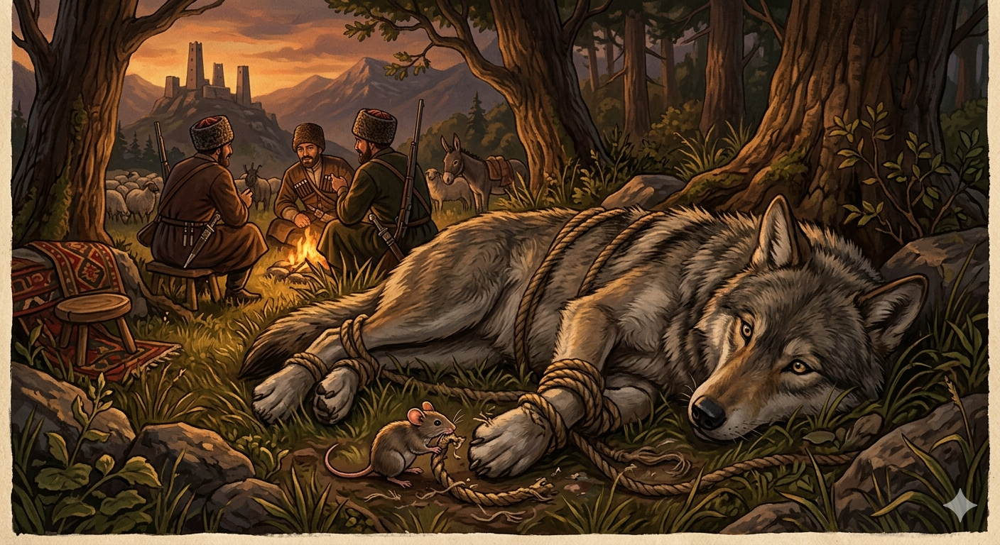

И.А. Дахкильгов. Хьехаме дувцарш - поучительные рассказы-притчи.
И.А. Дахкильгов. Хьехаме дувцарш - поучительные рассказы-притчи. Из ингушского фольклора.

Дахко бордз мукъаяьккхарах
Цхьанахьа диккха йиза а йиза, йоагӀаш хиннай бордз. Бедда бода дахка лаьцаб цо. - Со йиза йолаш баа пайданна а бац хьо, бийна дӀабаьккхача бакъахьа ба-кха хьо, - аьннад берзо. - Бийча фу пайда хул хьона? ДӀахеца со, мичча хана со хьона накъабоале а хьанна хов, - дийхад дахко. - Хьо мо зӀамига дахка со мо йоккхача берза малагӀча гӀулакха накъабаргба? ХӀаьта а, Ӏа хоза дош аларах аз дӀахец хьо, - аьнна, дахках ца башаш берзо из дӀахийцаб. Кхо-оно, цкъа хьунагӀа йодаш, бордз дӀалаьцай чарахьаша оттаяьча боанго. ТӀабеттабеннача чарахьаша боангара хьа а яьккха, мушашца тоӀӀая дӀа йийхка, бордз Ӏойиллай, салеӀачул тӀехьагӀа из юрта дӀахьоргйолаш. Дуненах дог дила уллача берза тебба дахка тӀабенаб. - Сох ца яшаш ма хиннаярий хьо, бордз, хӀанза ховргда-кха хьона гӀулакх мичара доагӀаргда цӀаккха ха йиш йоацалга, - аьннача дахко мушаш тийдад. Фуд-малад ха чарахьаш кхелехьа, бордз ийккха хьунагӀа къайлаяьннай.
РУССКИЙ
Мышь спасла волка
Сытно пообедал волк и идет себе довольный. Вдруг, перед ним пробежала мышка, и волк по привычке схватил ее. - Сыт я, и ты, мышка, мне не еда. Лучше прибью-ка я тебя, - сказал волк. - Убьешь, и что пользы? - отвечала мышь. - Отпусти, кто знает, может, когда-нибудь сгожусь тебе. - Чем может помочь такая маленькая мышка такому большому волку, как я? Ладно, отпущу тебя с миром за твои приятные речи, - сказал волк и отпустил мышь. Прошло время, и как-то волк попал в капкан. Набросились на него охотники, вызволили из капкана и накрепко связали. Они решили отдохнуть, а затем отнести волка в село. Лежит волк в сторонке, прощаясь с жизнью. Но тут подползла к нему мышка и шепнула: - Волк, ты смеялся надо мною, а теперь ты узнаешь, что помощь может прийти и от слабого. Мышь перегрызла веревки. Охотники не успели прийти в себя, как волк мигом скрылся в лесу.
ENGLISH
The mouse saved the wolf
The wolf had eaten his fill and was walking along, quite content. Suddenly, a mouse scurried past him, and out of habit, the wolf snatched it up. 'I'm full, and you, little mouse, aren't food for me. I'd better just kill you,' said the wolf. 'You'll kill me, but what good will that do?' replied the mouse. 'Let me go; who knows, perhaps I'll come in handy to you one day.' 'How can such a tiny mouse be of any help to a big wolf like me? All right, I'll let you go in peace for your kind words,' said the wolf, and he let the mouse go. Some time passed, and one day the wolf got caught in a trap. Hunters rushed over, freed him from the trap and tied him up tightly. They decided to rest for a while and then take the wolf to the village. The wolf lay there, resigned to his fate. But then the mouse crept up to him and whispered: 'Wolf, you laughed at me, but now you'll learn that help can come even from the weak.' The mouse gnawed through the ropes. Before the hunters had time to react, the wolf had vanished into the forest in an instant.
НОХЧИЙН
ПОГОВОРКИ
Боанга чу баха дахка моллагӀча Ӏурга чу эккха кхийна бац. Попавшая в капкан мышь готова броситься в любую дырочку. A mouse caught in a trap will throw itself into any hole it sees. Гуран чу бахан дахка муьлхачу Ӏуьрган чу эккха кхийна бац.Вешийна ший воша вицлургвац. Брат не забудет брата (совершит кровную месть). A brother will never forget his brother (he will carry out the blood revenge). Вешин ваша вицлур вац.Дахко хий техача, форд а болабеннаб. Помочилась мышка, и море перелилось через край. The mouse relieved itself, and the sea overflowed. Дахкас хи тоьхча, хӀорд а тӀехбаьлла.Доккхача хабарал зӀамига гӀулакх тол. Малое дело лучше больших (длинных) речей. A small deed is better than a long speech. Доккхачу хабарал жима гӀуллакх тоьлу.ДӀадилар накъадаьннад, дехкар дайнад. Отложил – пригодилось, продал – пропало. What was set aside proved useful; what was sold off was lost for good. ДӀадиллинарг новкъадаьлла, доьхкинарг дайна.Къавенна тишвеннача сага кхо ког эш. Старому и немощному нужны три ноги (посох нужен). An old, worn-out man needs a third leg (a walking stick). Къанвеллачу тишвеллачу стагана кхоъ ког оьшу.Къайг тӀаеча, кӀала яьгӀар гӀот. Даже ворона привстает, когда другая подлетает. Even a crow rises a little when another crow lands beside it. Къиг тӀеача, кӀел йахарг гӀотту.Оахаш аьннар оардаш корадаьд. Сказанное на пахоте нашлось на жатве. What was said while ploughing turned out to matter come harvest. Охуш аьлларг оруш карийна.Хозача дешо Ӏурга чура текхарг баьккхаб. Ласковое слово и змею из норки выманило. A gentle word can even lure a snake from its hole. Хазачу дашо Ӏуьрга чуьра текхарг йаккхина.Цхьадола хьазилг лаьчан дог долаш хул. Бывает пичужка с соколиным сердцем. There are small birds with a falcon's heart. Цхьадолу хьоза лечан дог долуш хуьлу.Ши шай миссел мара мах бац, аьнна, хийтта саг а накъавоалаш моттигаш нийсалу. Бывает, что в чем-то пригодится и человек, за которого в другой раз ты не дал бы и двух пятаков. There are moments when a man you'd once have given nothing for turns out to be useful. Ши шай массал мах бац, аьлла, хетта стаг а оьшуш меттигаш нисло.Ший къорга чу дахкана а шийх лом хет. В своей норе и мышь себя львом считает. In its own burrow, even a mouse thinks itself a lion. Шен Ӏуьрган чохь дахкана а ша лом хета.Ше бувш, дахко а цергаш техай. И мышь стала кусаться, когда ее стали убивать. Even the mouse bit back when they tried to kill it. Ша буьйш, дахко а цергаш тоьхна.